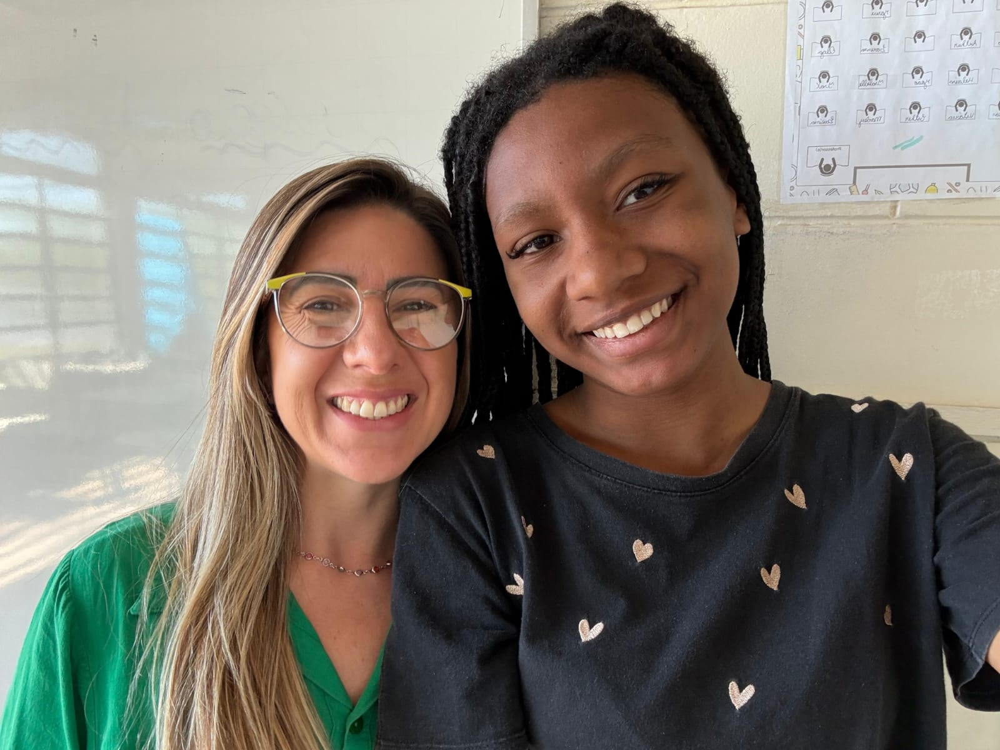
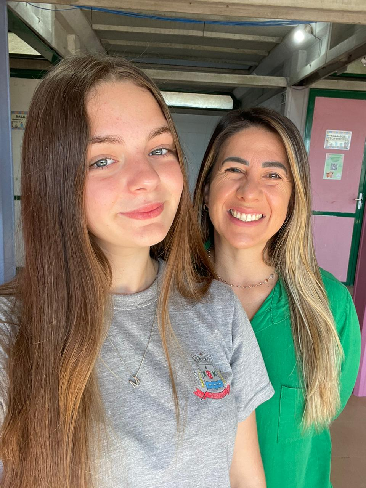
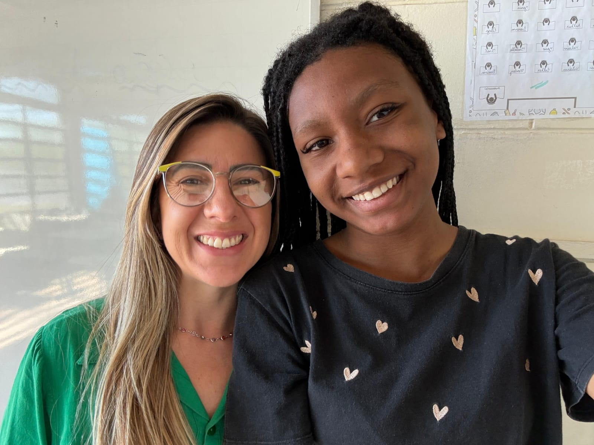
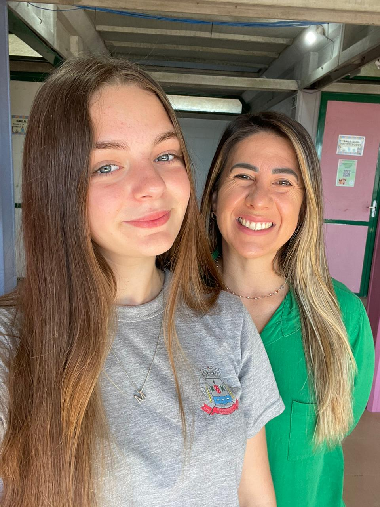
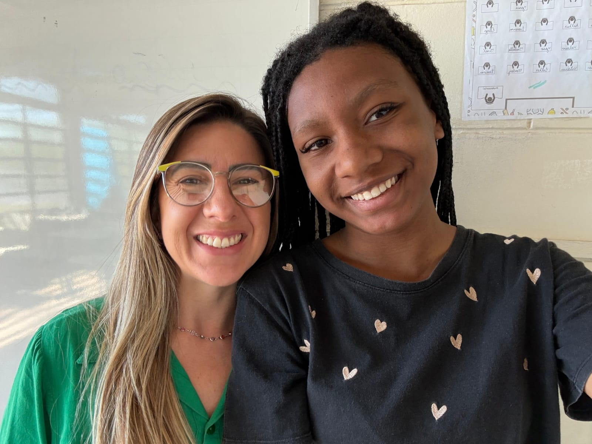
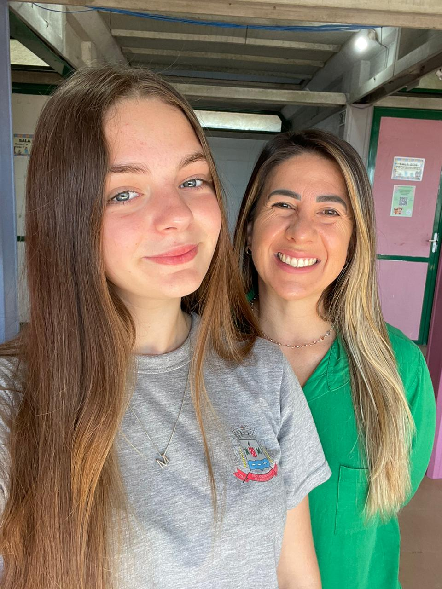

momento marcantes
mesmo que a gente não tenha tido tantas aulas juntas, cada uma delas ficou marcada pra mim. As conversas, as brincadeiras e o jeito leve que a senhora tem de ensinar sempre fizeram meu dia ficar muito melhor.

 



Formação: Graduação em letras - Português e Espanhol, especialização em educação de jovens e adultos mestrado em história da literatura, doutorado em história da literatura, Pós- graduação em Gestão e supervisão escolar
Tempo de atuação: 10 anos
hobby: Comer, andar de bicicleta e dançar
Quero agradecer por todo o tempo que tivemos contigo. As tuas aulas sempre foram leves, divertidas e cheias de aprendizado, não só sobre o espanhol, mas também sobre paciência, dedicação e carinho. Tu sempre conseguiu transformar até os dias mais chatos em momentos bons, e isso é algo que vou levar comigo. Dá uma mistura de tristeza e gratidão saber que o ano tá acabando e que não vamos mais ter aula contigo, mas fico feliz por ter aprendido tanto contigo nesse tempo, eis uma professora muito especial, podes ter certeza que vou lembrar de ti sempre com muito carinho e amor
Quis escolher minha professora de Espanhol porque, mesmo eu quase não falando muito na aula, ela consegue tocar a gente de um jeito diferente. Tem pessoas que não precisam de intimidade pra marcar, e a Natália é uma delas! Gosto do jeito calmo que ela tem, da paciência, e de como ela faz tudo parecer menos pesado. Tem dias que eu chego cansada, mas a aula dela deixa tudo mais leve, como se fosse um respiro no meio do dia. Talvez ela nem saiba, mas o jeito dela ensinar e tratar a turma faz diferença. Então, essa homenagem é só pra agradecer por tudo que ela faz, até nas pequenas coisas. Porque às vezes é justamente isso que mais marca.
mesmo que a gente não tenha tido tantas aulas juntas, cada uma delas ficou marcada pra mim. As conversas, as brincadeiras e o jeito leve que a senhora tem de ensinar sempre fizeram meu dia ficar muito melhor.

